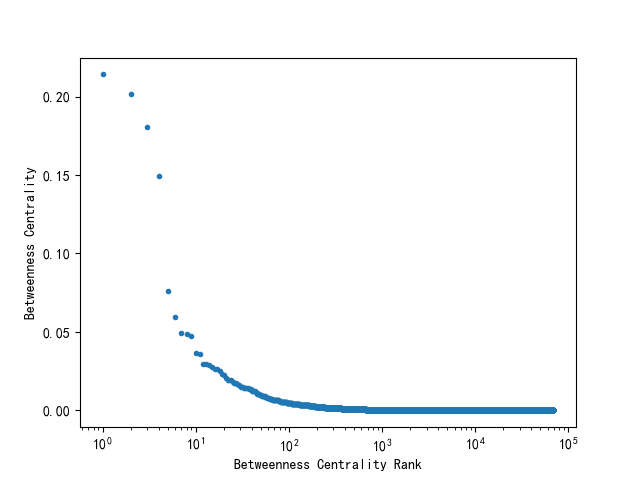
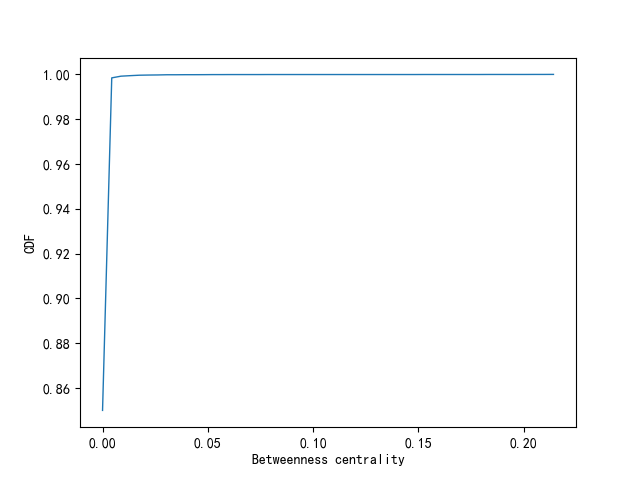
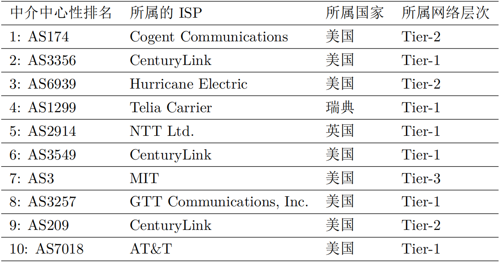
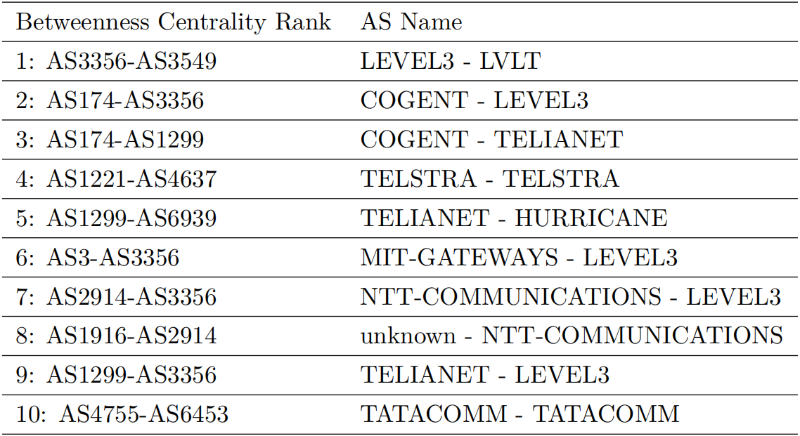

AS节点中介中心性
中介中心性衡量的是一个节点承载的路由的数量。一个节点`v_(i)`的中介中心性`C_(b)(v_(i))`可以通过以下的公式得到：

其中`P`代表了路由路径的总数，`V`代表节点的集合，`p_(uw)(v_(i))`代表从节点`u`出发经过节点`v_(i)`到达节点`w`的路径，链路的中介中心性的计算与之类似。


我们利用routeviews和RIPE RIS的路由数据以及利用路由估算算法推测的路由数据计算AS拓扑各个节点的中介中心性。上图展示2019年1月AS拓扑各节点的中介中心性及其CDF分布，AS级别的节点中介中心性也遵循着极少数的节点具有极高的中介中心性的特点，约有0.15%的节点的中介中心性大于0.0044。

上表展示了中介中心性最高的十个AS，全球绝大多数的互联网流量都穿越这些AS，因此可以看作是全球互联网的关键节点。中介中心性最高的前100个AS中覆盖了100%的Tier-1的AS。在中介中心性最高的前100个AS中29个属于美国、9个属于俄罗斯、5个属于澳大利亚、4个属于英国、4个属于中国、3个属于德国、3个属于韩国。

同样的，我们根据路由数据，对AS间的链路也进行了中介中心性的计算，计算的方法与节点的中介中心性类似，上表展示了中介中心性最高的10个AS链路。